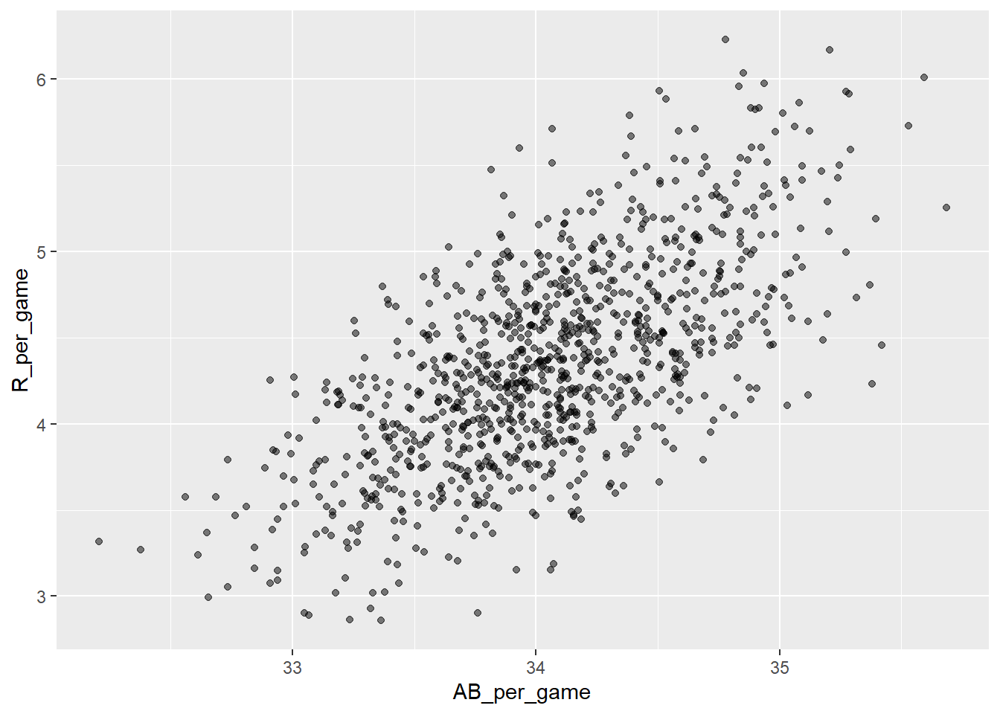
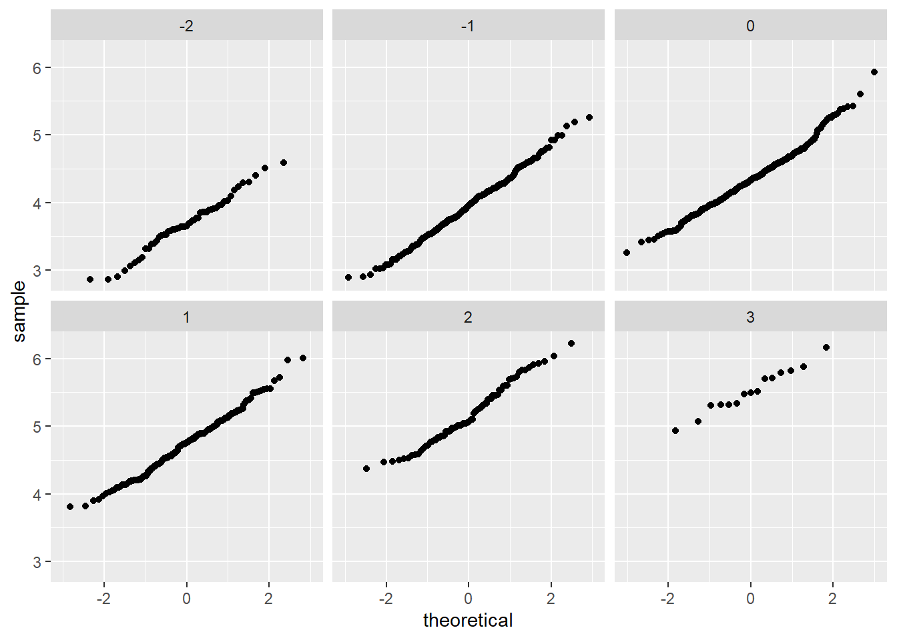

Linear Regression
library(dplyr)##
## Attaching package: 'dplyr'## The following objects are masked from 'package:stats':
##
## filter, lag## The following objects are masked from 'package:base':
##
## intersect, setdiff, setequal, unionlibrary(ggplot2)
library(Lahman)
data(Teams)
head(Teams)## yearID lgID teamID franchID divID Rank G Ghome W L DivWin WCWin LgWin
## 1 1871 NA BS1 BNA <NA> 3 31 NA 20 10 <NA> <NA> N
## 2 1871 NA CH1 CNA <NA> 2 28 NA 19 9 <NA> <NA> N
## 3 1871 NA CL1 CFC <NA> 8 29 NA 10 19 <NA> <NA> N
## 4 1871 NA FW1 KEK <NA> 7 19 NA 7 12 <NA> <NA> N
## 5 1871 NA NY2 NNA <NA> 5 33 NA 16 17 <NA> <NA> N
## 6 1871 NA PH1 PNA <NA> 1 28 NA 21 7 <NA> <NA> Y
## WSWin R AB H X2B X3B HR BB SO SB CS HBP SF RA ER ERA CG SHO SV
## 1 <NA> 401 1372 426 70 37 3 60 19 73 16 NA NA 303 109 3.55 22 1 3
## 2 <NA> 302 1196 323 52 21 10 60 22 69 21 NA NA 241 77 2.76 25 0 1
## 3 <NA> 249 1186 328 35 40 7 26 25 18 8 NA NA 341 116 4.11 23 0 0
## 4 <NA> 137 746 178 19 8 2 33 9 16 4 NA NA 243 97 5.17 19 1 0
## 5 <NA> 302 1404 403 43 21 1 33 15 46 15 NA NA 313 121 3.72 32 1 0
## 6 <NA> 376 1281 410 66 27 9 46 23 56 12 NA NA 266 137 4.95 27 0 0
## IPouts HA HRA BBA SOA E DP FP name
## 1 828 367 2 42 23 243 24 0.834 Boston Red Stockings
## 2 753 308 6 28 22 229 16 0.829 Chicago White Stockings
## 3 762 346 13 53 34 234 15 0.818 Cleveland Forest Citys
## 4 507 261 5 21 17 163 8 0.803 Fort Wayne Kekiongas
## 5 879 373 7 42 22 235 14 0.840 New York Mutuals
## 6 747 329 3 53 16 194 13 0.845 Philadelphia Athletics
## park attendance BPF PPF teamIDBR teamIDlahman45
## 1 South End Grounds I NA 103 98 BOS BS1
## 2 Union Base-Ball Grounds NA 104 102 CHI CH1
## 3 National Association Grounds NA 96 100 CLE CL1
## 4 Hamilton Field NA 101 107 KEK FW1
## 5 Union Grounds (Brooklyn) NA 90 88 NYU NY2
## 6 Jefferson Street Grounds NA 102 98 ATH PH1
## teamIDretro
## 1 BS1
## 2 CH1
## 3 CL1
## 4 FW1
## 5 NY2
## 6 PH1Load the Lahman library. Filter the Teams data frame to include years from 1961 to 2001.
What is the correlation coefficient between number of runs per game and number of at bats per game?
filtered_teams <- Teams %>%
filter(yearID >= 1961 & yearID <= 2001)
head(filtered_teams)## yearID lgID teamID franchID divID Rank G Ghome W L DivWin WCWin LgWin
## 1 1961 AL BAL BAL <NA> 3 163 82 95 67 <NA> <NA> N
## 2 1961 AL BOS BOS <NA> 6 163 82 76 86 <NA> <NA> N
## 3 1961 AL CHA CHW <NA> 4 163 81 86 76 <NA> <NA> N
## 4 1961 NL CHN CHC <NA> 7 156 78 64 90 <NA> <NA> N
## 5 1961 NL CIN CIN <NA> 1 154 77 93 61 <NA> <NA> Y
## 6 1961 AL CLE CLE <NA> 5 161 81 78 83 <NA> <NA> N
## WSWin R AB H X2B X3B HR BB SO SB CS HBP SF RA ER ERA CG SHO SV
## 1 N 691 5481 1393 227 36 149 581 902 39 30 NA NA 588 526 3.22 54 21 33
## 2 N 729 5508 1401 251 37 112 647 847 56 36 NA NA 792 687 4.29 35 6 30
## 3 N 765 5556 1475 216 46 138 550 612 100 40 NA NA 726 653 4.06 39 3 33
## 4 N 689 5344 1364 238 51 176 539 1027 35 25 NA NA 800 689 4.48 34 6 25
## 5 N 710 5243 1414 247 35 158 423 761 70 33 NA NA 653 575 3.78 46 12 40
## 6 N 737 5609 1493 257 39 150 492 720 34 11 NA NA 752 665 4.15 35 12 23
## IPouts HA HRA BBA SOA E DP FP name park
## 1 4413 1226 109 617 926 126 173 0.980 Baltimore Orioles Memorial Stadium
## 2 4326 1472 167 679 831 143 140 0.977 Boston Red Sox Fenway Park II
## 3 4344 1491 158 498 814 128 138 0.980 Chicago White Sox Comiskey Park
## 4 4155 1492 165 465 755 183 175 0.970 Chicago Cubs Wrigley Field
## 5 4110 1300 147 500 829 134 124 0.977 Cincinnati Reds Crosley Field
## 6 4329 1426 178 599 801 139 142 0.977 Cleveland Indians Cleveland Stadium
## attendance BPF PPF teamIDBR teamIDlahman45 teamIDretro
## 1 951089 96 96 BAL BAL BAL
## 2 850589 102 103 BOS BOS BOS
## 3 1146019 99 97 CHW CHA CHA
## 4 673057 101 104 CHC CHN CHN
## 5 1117603 102 101 CIN CIN CIN
## 6 725547 97 98 CLE CLE CLEWhat is the correlation coefficient between number of runs per game and number of at bats per game?
Teams_small <- Teams %>% filter(yearID %in% 1961:2001)
cor(Teams_small$AB/Teams_small$G, Teams_small$R/Teams_small$G)## [1] 0.6580976What is the correlation coefficient between win rate (number of wins per game) and number of errors per game?
cor(Teams_small$W/Teams_small$G, Teams_small$E/Teams_small$G)## [1] -0.3396947What is the correlation coefficient between win rate (number of wins per game) and number of errors per game?
cor(Teams_small$X2B/Teams_small$G, Teams_small$X3B/Teams_small$G)## [1] -0.01157404p <- Teams %>% filter(yearID %in% 1961:2001 ) %>%
mutate(AB_per_game = AB/G, R_per_game = R/G) %>%
ggplot(aes(AB_per_game, R_per_game)) +
geom_point(alpha = 0.5)
p
The qq-plots confirm that the normal approximation is useful here:
Teams %>% filter(yearID %in% 1961:2001 ) %>%
mutate(z_HR = round((HR - mean(HR))/sd(HR)),
R_per_game = R/G) %>%
filter(z_HR %in% -2:3) %>%
ggplot() +
stat_qq(aes(sample=R_per_game)) +
facet_wrap(~z_HR) 
Given the figure below, explain how to describe the slope of the regression line:

The slope is . Expressed in words, the slope is the correlation coefficient of the son and father heights times the standard deviation of the sons’ heights divided by the standard deviation of the fathers’ heights.